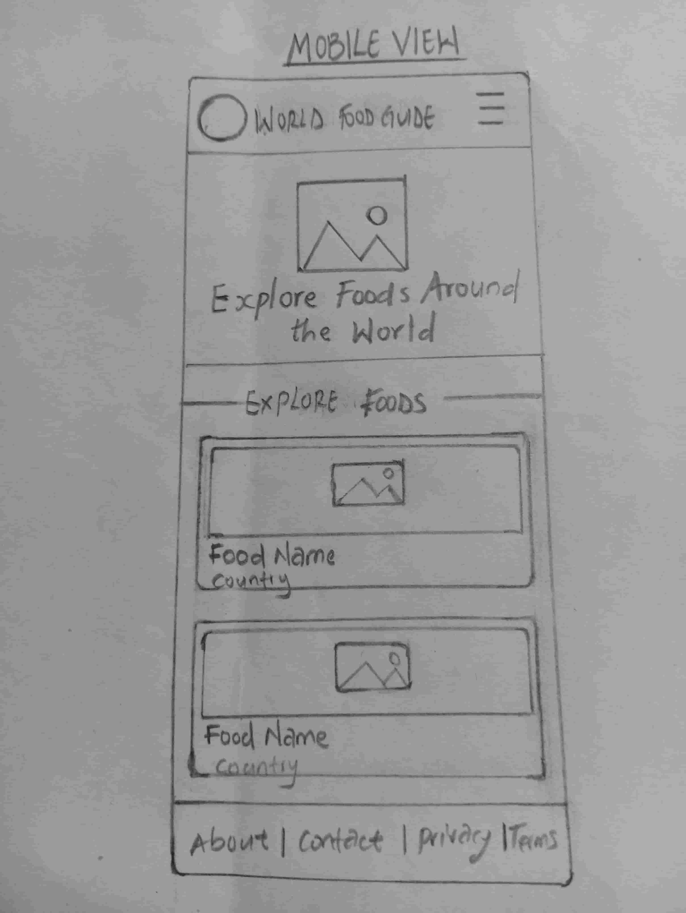
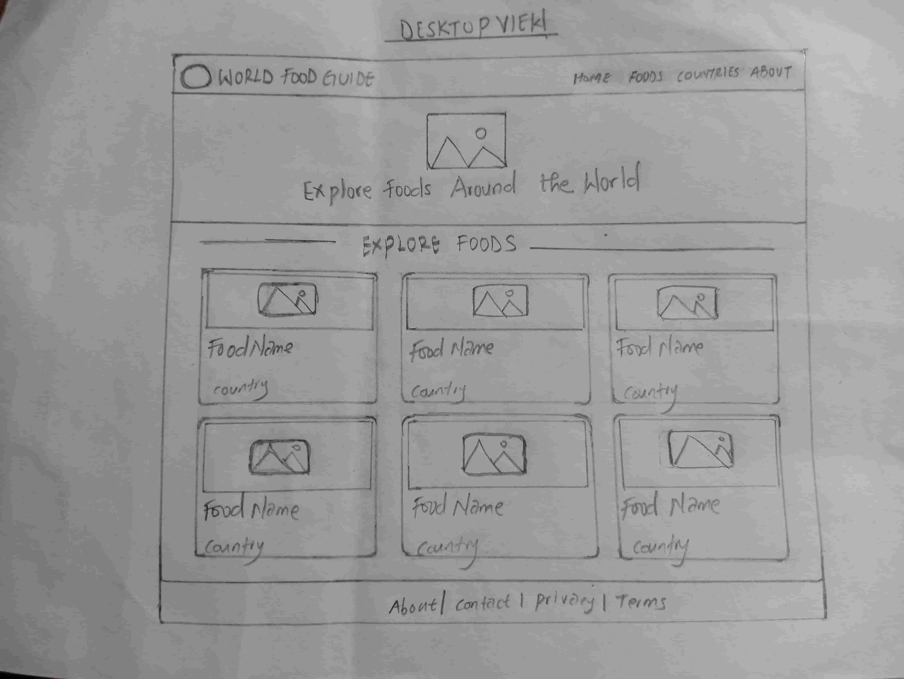

Site Name
World Food Guide - Site Plan
The name "World Food Guide" was selected because it clearly represents a website that provides information about foods from different countries and cultures around the world.
Site Purpose
The name World Food Guide provides information about different foods from around the world. Visitors will be able to explore popular dishes, learn about their countries of origin, discover food categories, and learn about ingredientsand other interesting information about each dish.
Scenerios
- What foods are popular in different countries around the world?
- What country does a particular dish come from?
- What ingredients are commonly used in a particular dish?
Color Scheme
Deep Green (#2E7D32): Used for headings, navigation, and important accents.
Warm Cream (#FFF8E7): Used as the main page background.
Dark Brown (#3E2723): Used for body text and secondary elemants.
Typography
Poppins: Used for headings and navigation.
Open Sans: Used for body text and paragraphs.
Wireframes
Mobile View
A black and white Wireframe showing the layout of the world Food Guide home page on a small mobile screen.

Desktop View
A black and white wireframes showing the layout of the World Food Guide home page on a larger desktop or tablet screen.
